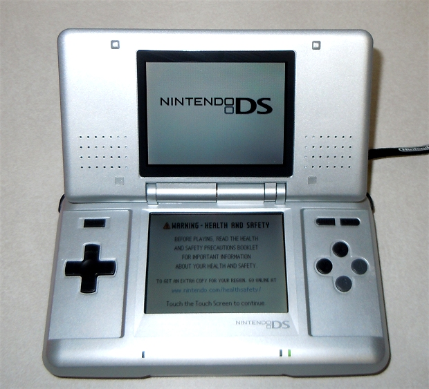
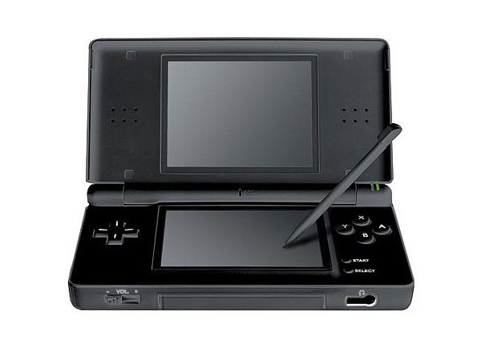
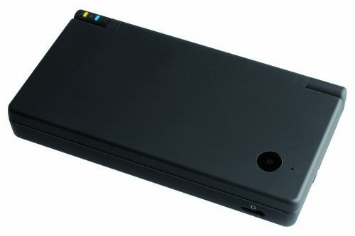
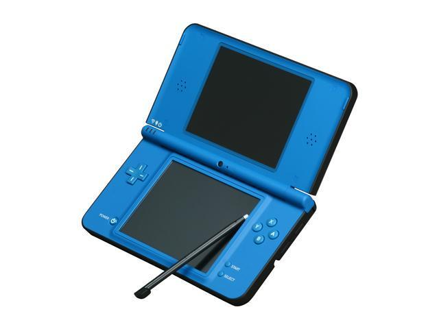

(nav)
The DS is a Nintendo console.The DS was released in the U.S. in late 2004. The DS stands for "dual screen" and "developer system". This hand-held console came with 2 key features. It has 2 lCD sreens. One of the screens is a touchscreen. The DS brought these features into mainstream concepts.
DS Facts
More DS Facts
Original DS  Released: November 21, 2004
DS Lite

Released: June 11, 2006
DSI

Released: April 5, 2009
DSI XL

Released: March 28, 2010
back to top
youtube
Contact Info
Official website